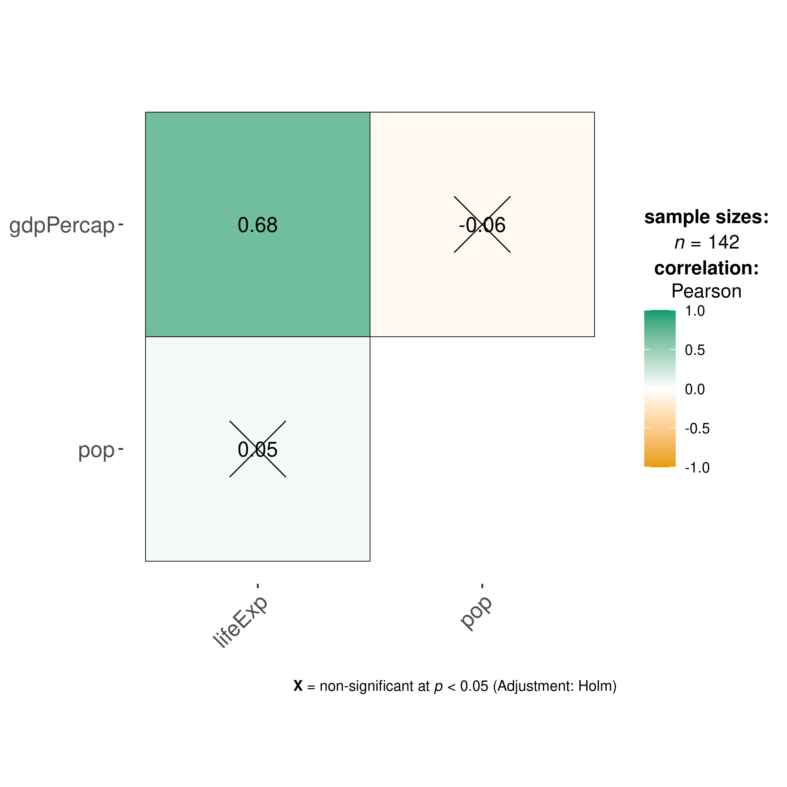
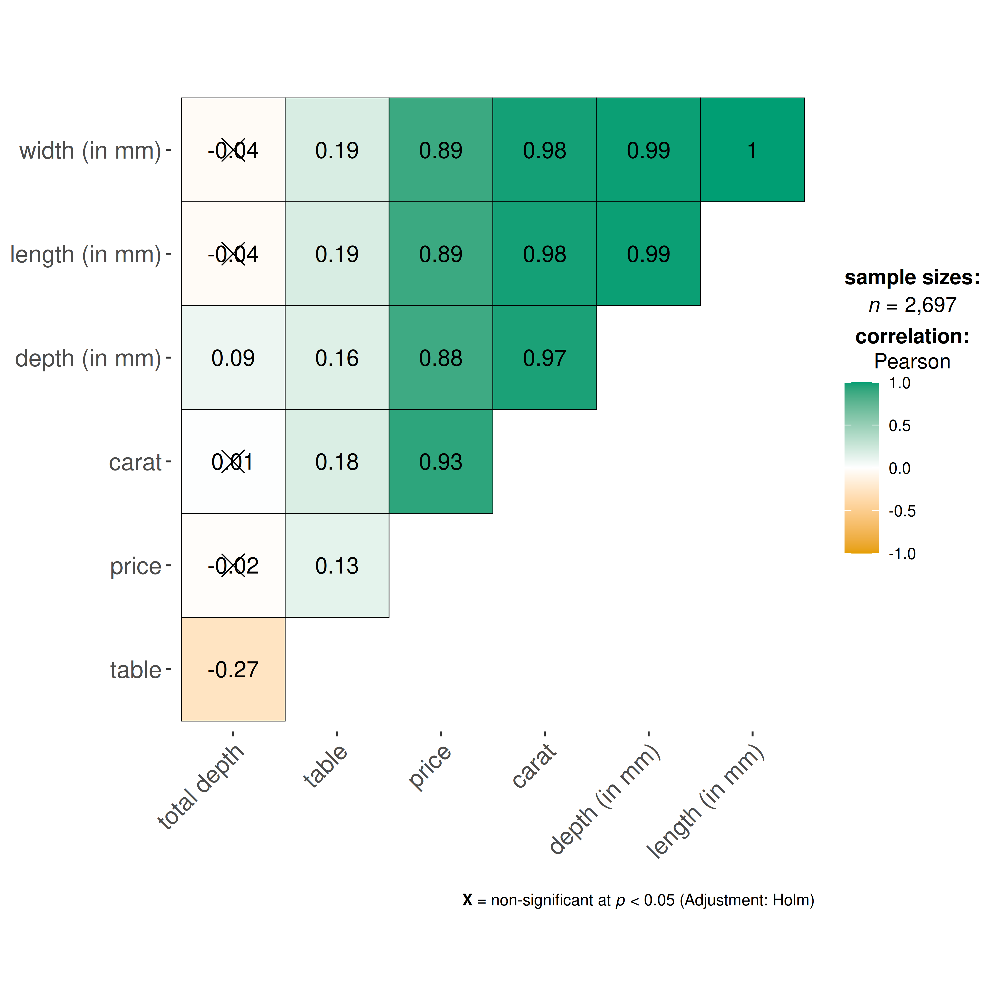

You can cite this package/vignette as:
To cite package 'ggstatsplot' in publications use:
Patil, I. (2021). Visualizations with statistical details: The
'ggstatsplot' approach. Journal of Open Source Software, 6(61), 3167,
doi:10.21105/joss.03167
A BibTeX entry for LaTeX users is
@Article{,
doi = {10.21105/joss.03167},
url = {https://doi.org/10.21105/joss.03167},
year = {2021},
publisher = {{The Open Journal}},
volume = {6},
number = {61},
pages = {3167},
author = {Indrajeet Patil},
title = {{Visualizations with statistical details: The {'ggstatsplot'} approach}},
journal = {{Journal of Open Source Software}},
}Lifecycle: 
The function ggcorrmat() provides a quick way to produce
publication-ready correlation matrix (aka
correlalogram) plot. The function can also be used for quick
data exploration. In addition to the plot, it can also
be used to get a correlation coefficient matrix or the associated
p-value matrix. This function is a convenient wrapper around
ggcorrplot::ggcorrplot() function with some additional
functionality.
We will see examples of how to use this function in this vignette
with the gapminder and diamonds dataset.
To begin with, here are some instances where you would want to use
ggcorrmat-
- to easily visualize a correlation matrix using ggplot2
- to quickly explore correlation between (all) numeric variables in the dataset
Correlation matrix plot with ggcorrmat()
For the first example, we will use the gapminder dataset
(available in eponymous package on CRAN)
provides values for life expectancy, Gross Domestic Product (GDP) per
capita, and population, every five years, from 1952 to 2007, for each of
142 countries and was collected by the Gapminder Foundation. Let’s have
a look at the data-
library(gapminder)
library(dplyr)
dplyr::glimpse(gapminder)
#> Rows: 1,704
#> Columns: 6
#> $ country <fct> "Afghanistan", "Afghanistan", "Afghanistan", "Afghanistan", …
#> $ continent <fct> Asia, Asia, Asia, Asia, Asia, Asia, Asia, Asia, Asia, Asia, …
#> $ year <int> 1952, 1957, 1962, 1967, 1972, 1977, 1982, 1987, 1992, 1997, …
#> $ lifeExp <dbl> 28.801, 30.332, 31.997, 34.020, 36.088, 38.438, 39.854, 40.8…
#> $ pop <int> 8425333, 9240934, 10267083, 11537966, 13079460, 14880372, 12…
#> $ gdpPercap <dbl> 779.4453, 820.8530, 853.1007, 836.1971, 739.9811, 786.1134, …Let’s say we are interested in studying correlation between population of a country, average life expectancy, and GDP per capita across countries only for the year 2007.
The simplest way to get a correlation matrix is to stick to the defaults-
## select data only from the year 2007
gapminder_2007 <- dplyr::filter(gapminder::gapminder, year == 2007)
## producing the correlation matrix
ggcorrmat(
data = gapminder_2007, ## data from which variable is to be taken
cor.vars = lifeExp:gdpPercap ## specifying correlation matrix variables
)
This plot can be further modified with additional arguments-
ggcorrmat(
data = gapminder_2007, ## data from which variable is to be taken
cor.vars = lifeExp:gdpPercap, ## specifying correlation matrix variables
cor.vars.names = c(
"Life Expectancy",
"population",
"GDP (per capita)"
),
type = "np", ## which correlation coefficient is to be computed
lab.col = "red", ## label color
ggtheme = ggplot2::theme_light(), ## selected ggplot2 theme
## turn off default ggestatsplot theme overlay
matrix.type = "lower", ## correlation matrix structure
colors = NULL, ## turning off manual specification of colors
palette = "category10_d3", ## choosing a color palette
package = "ggsci", ## package to which color palette belongs
title = "Gapminder correlation matrix", ## custom title
subtitle = "Source: Gapminder Foundation" ## custom subtitle
)
As seen from this correlation matrix, although there is no relationship between population and life expectancy worldwide, at least in 2007, there is a strong positive relationship between GDP, a well-established indicator of a country’s economic performance.
Given that there were only three variables, this doesn’t look that
impressive. So let’s work with another example from
ggplot2 package: the diamonds dataset.
This dataset contains the prices and other attributes of almost 54,000
diamonds.
Let’s have a look at the data-
library(ggplot2)
dplyr::glimpse(ggplot2::diamonds)
#> Rows: 53,940
#> Columns: 10
#> $ carat <dbl> 0.23, 0.21, 0.23, 0.29, 0.31, 0.24, 0.24, 0.26, 0.22, 0.23, 0.…
#> $ cut <ord> Ideal, Premium, Good, Premium, Good, Very Good, Very Good, Ver…
#> $ color <ord> E, E, E, I, J, J, I, H, E, H, J, J, F, J, E, E, I, J, J, J, I,…
#> $ clarity <ord> SI2, SI1, VS1, VS2, SI2, VVS2, VVS1, SI1, VS2, VS1, SI1, VS1, …
#> $ depth <dbl> 61.5, 59.8, 56.9, 62.4, 63.3, 62.8, 62.3, 61.9, 65.1, 59.4, 64…
#> $ table <dbl> 55, 61, 65, 58, 58, 57, 57, 55, 61, 61, 55, 56, 61, 54, 62, 58…
#> $ price <int> 326, 326, 327, 334, 335, 336, 336, 337, 337, 338, 339, 340, 34…
#> $ x <dbl> 3.95, 3.89, 4.05, 4.20, 4.34, 3.94, 3.95, 4.07, 3.87, 4.00, 4.…
#> $ y <dbl> 3.98, 3.84, 4.07, 4.23, 4.35, 3.96, 3.98, 4.11, 3.78, 4.05, 4.…
#> $ z <dbl> 2.43, 2.31, 2.31, 2.63, 2.75, 2.48, 2.47, 2.53, 2.49, 2.39, 2.…Let’s see the correlation matrix between different attributes of the diamond and the price.
## let's use just 5% of the data to speed it up
ggcorrmat(
data = dplyr::sample_frac(ggplot2::diamonds, size = 0.05),
cor.vars = c(carat, depth:z), ## note how the variables are getting selected
cor.vars.names = c(
"carat",
"total depth",
"table",
"price",
"length (in mm)",
"width (in mm)",
"depth (in mm)"
),
ggcorrplot.args = list(outline.color = "black", hc.order = TRUE)
)
We can make a number of changes to this basic correlation matrix. For
example, since we were interested in relationship between price and
other attributes, let’s make the price column to the the
first column.
## let's use just 5% of the data to speed it up
ggcorrmat(
data = dplyr::sample_frac(ggplot2::diamonds, size = 0.05),
cor.vars = c(price, carat, depth:table, x:z), ## note how the variables are getting selected
cor.vars.names = c(
"price",
"carat",
"total depth",
"table",
"length (in mm)",
"width (in mm)",
"depth (in mm)"
),
type = "np",
title = "Relationship between diamond attributes and price",
subtitle = "Dataset: Diamonds from ggplot2 package",
colors = c("#0072B2", "#D55E00", "#CC79A7"),
pch = "square cross",
## additional aesthetic arguments passed to `ggcorrmat()`
ggcorrplot.args = list(
lab_col = "yellow",
lab_size = 6,
tl.srt = 90,
pch.col = "white",
pch.cex = 14
)
) + ## modification outside `{ggstatsplot}` using `{ggplot2}` functions
ggplot2::theme(
axis.text.x = ggplot2::element_text(
margin = ggplot2::margin(t = 0.15, r = 0.15, b = 0.15, l = 0.15, unit = "cm")
)
)
As seen here, and unsurprisingly, the strongest predictor of the diamond price is its carat value, which a unit of mass equal to 200 mg. In other words, the heavier the diamond, the more expensive it is going to be.
Grouped analysis with grouped_ggcorrmat
What if we want to do the same analysis separately for each quality
of the diamond cut (Fair, Good, Very Good, Premium,
Ideal)?
ggstatsplot provides a special helper function for
such instances: grouped_ggcorrmat(). This is merely a
wrapper function around combine_plots(). It applies
ggcorrmat() across all levels of a
specified grouping variable and then combines list of
individual plots into a single plot.
grouped_ggcorrmat(
## arguments relevant for `ggcorrmat()`
data = ggplot2::diamonds,
cor.vars = c(price, carat, depth),
grouping.var = cut,
## arguments relevant for `combine_plots()`
plotgrid.args = list(nrow = 3),
annotation.args = list(
tag_levels = "a",
title = "Relationship between diamond attributes and price across cut",
caption = "Dataset: Diamonds from ggplot2 package"
)
)
Note that this function also makes it easy to run the same correlation matrix across different levels of a factor/grouping variable.
Data frame
If you want a data frame of (grouped) correlation matrix, use
correlation::correlation() instead. It can also do grouped
analysis when used with output from dplyr::group_by().
Grouped analysis with ggcorrmat() +
{purrr}
Although grouped_ function is good for quickly exploring
the data, it reduces the flexibility with which this function can be
used. This is the because the common parameters used are applied to
plots corresponding to all levels of the grouping variable and there is
no way to customize the arguments for different levels of the grouping
variable. We will see how this can be done using the
purrr package.
See the associated vignette here: https://indrajeetpatil.github.io/ggstatsplot/articles/web_only/purrr_examples.html
Summary of graphics and tests
Details about underlying functions used to create graphics and statistical tests carried out can be found in the function documentation: https://indrajeetpatil.github.io/ggstatsplot/reference/gghistostats.html
Suggestions
If you find any bugs or have any suggestions/remarks, please file an
issue on GitHub: https://github.com/IndrajeetPatil/ggstatsplot/issues